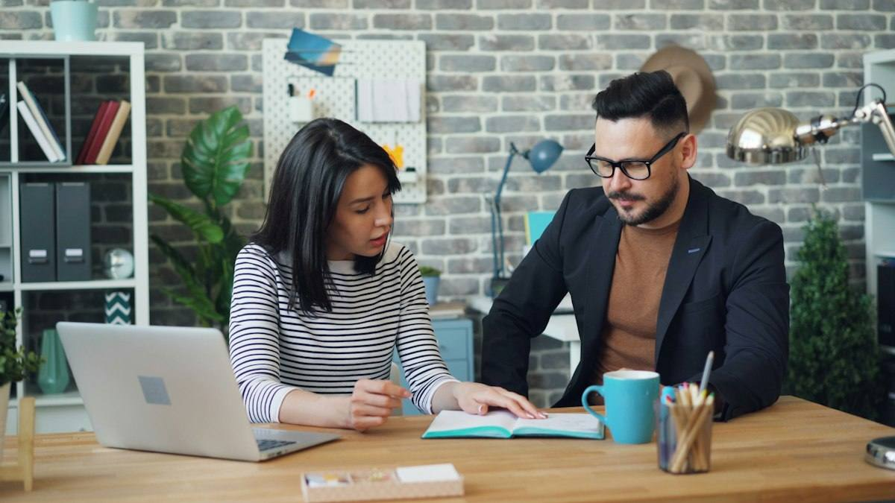
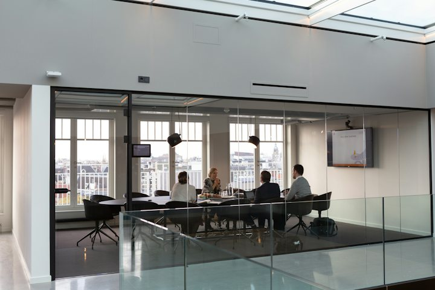
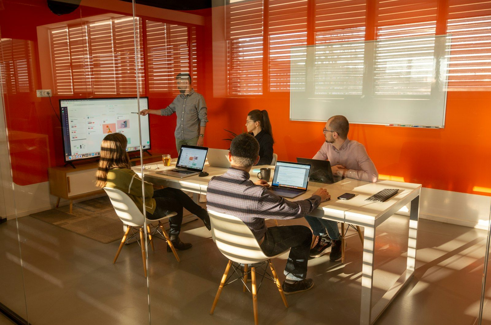

Warm-up · Pitch it in 20 seconds

Choose the problem you would most like to solve at work. Tell the class what we should do about it, and why that problem comes first.
Pick a problem and pitch your idea out loud
Pitched 0 / 1Teacher notes · §1 Warm-up
Pedagógica
- El alumno elige UN problema de tres y lo "vende" en 20 s con SU lengua actual. No presentes la estructura del día: anota qué usa por instinto para proponer (we should / we need / I want to) y cómo expresa el objetivo (for + sustantivo, for to + verbo son errores típicos): es la línea base de §3. El botón "I said it" solo aparece después de elegir y tiene reloj de 20 s.
- Línea del desacuerdo: unos dicen que un problema se arregla ya, sin papeleo; otros dicen que una propuesta corta con costo y riesgo convence más que un arreglo a escondidas. No resuelvas: es el motor de la sesión.
- Máximo 4 minutos. Tema: Seguro (problemas ficticios de planta). Temperatura: Mild. Prueba del micrófono apagado: sin hablar no se completa. En grupo, el compañero hace una pregunta: Why that one?. Reciclaje (R10): quick win y pilot (S17), should (S18), exception (S19) pueden salir solos.
Engagement
- "Un problema, una idea, una razón. 20 segundos."
- Cierra en voz alta con el recuadro verde.
Crecimiento
- Anota con qué palabras expresa el objetivo (to / for / because): línea base para §3.
- Riesgo: Seguro. Temperatura: Mild.
Vocabulary · 12 words to make a proposal
Tap to flip · listen to the word and the example
0 / 12 flippedBid chips on a lot. Win it by saying a proposal sentence
Chips 100 · Lots won 0 / 61. You have 100 chips. 2. A lot has two pieces. Bid 5, 10, 20 or 30 chips, or pass. 3. Say ONE real sentence for a proposal at work that uses BOTH pieces. 4. Said it: you get your chips back, doubled. Could not say it: you lose the bid. Group: a classmate confirms. 1:1: the teacher confirms.
Teacher notes · §2 Vocabulary
Pedagógica
- Voltea cada tarjeta: tú dices la palabra, el alumno repite y da su ejemplo. Palabras difíciles: proposal (pro-PO-zl), benefit (BEN-i-fit), approve (a-PROOV), timeline (TIME-line). The goal is to …, so we can … y This will help us … son patrones y se enseñan completos. Las 12 piezas: proposal, benefit, budget, timeline, owner, approve, pilot, risk, The goal is to …, so we can …, This will help us …, next step.
- VOC-02 Word Auction (SUBASTA): 6 lotes de dos piezas, 100 fichas; el alumno apuesta, dice UNA oración propia para una propuesta real con las dos piezas y solo entonces recupera la apuesta duplicada. En grupo otro confirma; en 1:1 confirma el docente. escalation_note (la dinámica vuelve de S12): en S12 había lotes de dos piezas con oración propia; ahora los lotes incluyen los patrones largos (The goal is to …, This will help us …), que exigen decir una estructura completa de propuesta, y los lotes ganados se llevan como caja de herramientas a la misión.
- Límites: sin would ni hipótesis. Prueba del micrófono apagado: sin decir la oración no se cobra. Sin huecos ni opciones de respuesta; las fichas apostadas son decisión del alumno. Cierra en voz alta: "I won X lots and I finish with Y chips."
Engagement
- "Apuesta lo que te sientas capaz de decir. Una oración de TU trabajo."
- Si la oración no usa las dos piezas, no se cobra: pídela otra vez.
Crecimiento
- Anota qué lotes pasó o perdió (los patrones This will help us … suelen perderse): refuérzalos en §3 y §6.
- Venta: es la misma subasta que se hace en cualquier equipo con solo un papel y cien fichas.
Grammar · to + verb · so we can · This will help us
Read the chat. Find five ways to say what a proposal is for. Say them out loud.

Why do you want a checklist?
To find small problems before the line stops.
And what is the plan? My proposal is to test it for two weeks, so we can check the numbers.
What will it do for us?
It will help us restart faster. The goal is to save an hour a day.
to + verb · so we can + verb · This will help us + verb
1 · Purpose
We need a checklist to find problems early.
2 · Result
We start small, so we can learn fast.
3 · Benefit
This will help us save time.
| Statement, negative, question | Notice | |
|---|---|---|
| + | My proposal is to start a pilot. The goal is to save an hour. We test it for two weeks, so we can compare the numbers. This will help us restart faster. | After to, so we can and help us: the base verb. No -ing, no to. |
| − | The goal is not to add paperwork. This won’t help us save time if nobody uses it. | not to + verb · won’t help us + verb. |
| ? | What is the goal? How will this help us? What is it for? | Questions: What is the goal? How will this help us? What is it for? |
A proposal answers “What for?”. Never: for find · so we can to start · help us to saving.
¿Qué es? Para decir para qué sirve una propuesta usamos to + verbo (a checklist to find problems), so we can + verbo (para poder …) y This will help us + verbo (esto nos ayudará a …).
¿Cómo se usa? Después de to, so we can y help us va el verbo sin to y sin -ing. Para preguntar: What is the goal? How will this help us?
¿Para qué hoy? Para armar una propuesta corta: problema, propuesta, objetivo, costo, riesgo y siguiente paso.
Cuidado: en español decimos "para encontrar", y por eso se escucha for find o for to find. En inglés: to find. Tampoco se dice so we can to start ni help us to saving.
Which message does the job? Pick it, then say it
Read the message. Say the fixed version out loud. Then check
Fixed 0 / 3Climb four rungs. Each rung adds one part to the same proposal
Rung 0 / 41. Choose your problem: a real one from your work, or one of the cards. 2. Rung 1: say the problem. 3. Rung 2: say the problem and your proposal. 4. Rung 3: add the goal or the result. 5. Rung 4: say everything and add the cost, the risk and the next step. Every rung repeats the one before. Group: your partner listens and ticks. 1:1: the teacher listens.
Mistakes at this level
Teacher notes · §3 Grammar
Pedagógica
- Un solo punto: la lengua de propósito y beneficio dentro de una propuesta: to + verbo · so we can + verbo · This will help us + verbo (con The goal is to … y My proposal is to … como marcos). Es lengua B2.2 estable (Tier 08: precisión y responsabilidad, sin hipótesis); no cae en los Límites del Nivel. Sin would ni hipótesis (will help us es futuro simple), sin so that con tiempos distintos, sin condicionales. Retoma should (S18) y must / don’t have to (S19) solo como apoyo. Explicación continua ≤5 min; el botón en español está oculto por defecto.
- Practice A (mecánica, controlada) = decide y dilo: tres casos con tres mensajes correctos; solo uno hace el trabajo (objetivo, resultado, beneficio). Practice B = repáralo antes de enviarlo: tres mensajes con el error típico (for find, so we can to, help us to saving); el alumno dice la corrección ANTES de verla. Entre A y B no pasan de 1/3 del bloque.
- GRM-05 Ladder Sentences (ESCALADA), etapa meaningful → comunicativa: una sola propuesta que crece en cuatro peldaños (problema → propuesta → objetivo o resultado → costo, riesgo y siguiente paso); cada peldaño repite el anterior. Casillas de autochequeo; las dice el alumno y las confirma el compañero (en 1:1, tú). escalation_note (la dinámica vuelve de S11): en S11 la escalera subía una frase; ahora sube una propuesta completa, el cuarto peldaño exige costo, riesgo y siguiente paso, y el problema puede ser propio.
- Frases de rescate visibles en el cuarto peldaño y en el recuadro. Sin ejercicios de hueco. Límites: sin would ni hipótesis, sin reported questions, sin negociación compleja.
Engagement
- "Cada peldaño repite el anterior. Si te saltas uno, vuelve a empezar la frase."
- En Practice B, si el alumno dice la corrección a medias, pídele el mensaje completo.
Crecimiento
- Anota cuántos peldaños sostuvo sin leer y si dijo to + verbo en lugar de for + verbo: línea base para S21.
- Venta: poder decir "para qué sirve" una idea es lo que separa una queja de una propuesta que se aprueba.
Listening · A pilot proposal, a hidden ending

Anjali proposes a pilot to her manager, Sean. Listen to the proposal (two times at most). Then bet on what Sean decides. The ending is on a separate button.
Practice audio: your browser voice (not a real accent).
What does Sean decide? Say it, bet chips, then hear the ending
Chips 31. Listen to the proposal. 2. Choose what you think Sean says. 3. Bet 1, 2 or 3 chips. 4. Say your prediction out loud with a reason: “I think Sean will … because …”. 5. Lock the bet. The ending unlocks. Right: you win your bet. Wrong: you lose it.
A colleague asks you what happened. Which message is right?
Tell Anjali’s proposal to your partner. No script
You: in 45 seconds tell the proposal: the problem, what Anjali proposes, the goal, the risk, and what Sean decides. Say “Anjali said …” and “Sean decided …”. Your partner: do NOT open the script. Ask once: “What is the risk?” 1:1: the teacher is the partner.
You
Your partner
The script (a pilot proposal)
Anjali · Indian English · female · night-shift line leader, clear, natural pace | Sean · South African English · male · plant manager, calm, natural paceListen · repeat · record your best
Teacher notes · §4 Listening
Pedagógica
- LIS-12 Silent Ending (APUESTA): el audio se corta antes de la decisión y el alumno la predice con apuesta de 1 a 3 fichas, DICE la predicción con razón y solo entonces desbloquea el final (dos líneas). La predicción es insumo y no cuenta como pregunta de comprensión. Máximo dos reproducciones de la propuesta y dos del final. Task 2 es la única pregunta de idea general (decide y pasa el recado): tres mensajes completos y correctos en inglés; solo uno recoge la decisión real; no hay preguntas literales de detalle. Task 3: el alumno cuenta la propuesta 45 s sin guion y el compañero pregunta What is the risk?. escalation_note (la dinámica vuelve de S6): en S6 se apostaba por un final emocional de una línea; ahora se apuesta por una decisión de negocio con condición, y el alumno además tiene que retransmitirla.
- Guion: 169 palabras (tope ~200), 2 hablantes, 13 líneas (11 de propuesta + 2 de final). Contiene proposal (verbo), goal, risk, pilot, approve, checklist, to + verbo ×3, so we can ×1, This will help us ×1. Sin would ni hipótesis. Marca [pause] no usada.
- Para grabar (13 clips, uno por línea; el final son los clips 12 y 13): Anjali = inglés de la India, mujer, clara, ritmo natural · Sean = inglés sudafricano, hombre, tranquilo, ritmo natural. Cumple el mínimo de acento no nativo del programa (Anjali). Confirmar con un clip de muestra que las voces elegidas den ambos acentos de forma confiable. El audio de práctica del navegador no da acentos reales.
- Clave: predicción acertada = "Sean says yes, with a condition" (aprueba dos semanas en la línea tres, pide el checklist el viernes y los números después de la primera semana). Task 2: el mensaje que dice "approved a two-week pilot on Line three · checklist by Friday · numbers after the first week".
Engagement
- "Antes de oír el final, di tu predicción en voz alta. Con razón."
- El final se desbloquea solo si la apuesta está bloqueada y la predicción dicha.
Crecimiento
- Registra: si el alumno predijo con I think Sean will … because …, la apuesta, el resultado y cuántos de los 5 puntos de Task 3 sostuvo sin guion.
- Venta: retransmitir una decisión de la jefatura con claridad es lo que más pide el alumno industrial.
Speaking · The hidden-role pitch

1. Draw a proposal card. 2. Pitch it in 60 seconds. 3. Your partner asks ONE question, in a secret role. 4. Answer in 30 seconds. 5. Guess the role. 6. Swap. Three rounds.
1:1: the teacher is always the listener with the secret role.
Draw a proposal and defend it against a hidden role
Round 0 / 3 · Points 0Step 4 · Guess the role (presenter)
12 questions · always 2 follow-ups
Teacher notes · §5 Speaking
Pedagógica
- SPK-03 Devil's Advocate Draw (ROL OCULTO): tres rondas. El alumno saca una tarjeta de propuesta y la presenta 60 s; el oyente tiene un rol secreto (Supporter, Skeptic, Budget Guard o Risk Guard) y hace UNA pregunta en ese rol; el alumno responde 30 s con razón y al final adivina el rol. Después se cambian los papeles. En 1:1 tú eres el oyente con rol oculto en todas las rondas. escalation_note (la dinámica vuelve de S13): en S13 la postura asignada se defendía 90 s; ahora la postura la pone la pregunta del oyente, que no se conoce hasta ese momento, hay que responder con lengua de propuesta (propósito y beneficio) y además se adivina el rol.
- Puntaje: 3 por casilla de la presentación y de la respuesta y 5 por adivinar el rol; el oyente suma 3 si confirma que preguntó en su rol. Se cuenta lengua producida, no velocidad. Entre rondas o al final usa las 12 preguntas del mazo (~3 min). Tema: Seguro (propuestas de planta ficticias). Prueba del micrófono apagado: sin marcar lo dicho no se cierra el paso.
- Las casillas son autodeclaradas: el oyente (o tú en 1:1) confirma. Cierra en voz alta: "My proposal is clearer, and I answered a question I did not expect."
- Frases de rescate visibles: My proposal is to … · The goal is to …, so we can … · This will help us … · The cost is … The risk is …. Usarlas cuenta a favor.
Engagement
- "No sabes qué pregunta viene. Prepara la propuesta, no la respuesta."
- Si el oyente rompe el rol, pídele que repita la pregunta como la haría el personaje.
Crecimiento
- Registra qué propuesta eligió, qué rol le tocó y si adivinó; y si respondió con so we can / This will help us sin ayuda.
- Venta: responder una pregunta incómoda sin saber cuál será es lo que este alumno dice que no sabe hacer. Aquí lo practica con red.
Mission · The mini proposal brief

The Mini Proposal Brief
You lead a small team. Your manager has two minutes and wants a short proposal for each of three problems. For each case say the problem, your proposal (My proposal is to …), the goal or benefit (so we can … · This will help us …), and the cost and risk, and ask for the next step.
Group: each case goes to one student in a breakout room. Your partner asks “Why now?” once per case. Rotate every 3 minutes.
1:1: you brief the teacher. The teacher asks “Why now?” once per case.
Success: 3 mini proposals, each with the problem, “My proposal is to …”, the goal or benefit, the cost and risk, and a next step.
Choose one case. In 60 seconds, shrink the proposal: say what you can still do with zero budget in one week, what the goal is, and the next step. No cards, no reading.
Teacher notes · §6 Mission
Pedagógica
- Marca cada movimiento solo cuando el alumno lo dice sin leer la tarjeta.
- Evidencia observable: el problema, My proposal is to …, el objetivo o beneficio con so we can / This will help us, costo y riesgo, y una petición del siguiente paso. La clave está en Teacher view. Es válido recordar should (S18) y We could … (S17) para suavizar.
- Segunda toma con condición nueva: el jefe dice "sin presupuesto y una semana"; 60 s sin mirar tarjetas, encogiendo la propuesta. Esa toma es la evidencia individual sin apoyos: anótala en el Registro si se logró.
- Las cifras de los casos son ficticias. No interrumpas: el feedback va en §7.
Engagement
- Anuncia: "X of 12 moves."
- Si alguien solo dice el problema, pregunta "What is your proposal?" una vez.
Crecimiento
- "In Session 21 you take a good idea and make it work: execution."
- Conecta con la tarea final: una conversación estratégica de 3–4 minutos donde recomiendas y defiendes una decisión, con razón, costo y riesgo.
Wrap-up · Better the second time
✓ Success
↑ Upgrade
✎ Repair
↻ 2nd try
Repeat one brief with the teacher. Use the upgrades. Same task, better English.
60 seconds · pick the message, then say it
My second try is better because…
You can make a short proposal: problem, idea, goal, cost, risk and next step.
Homework: record a 60-second mini proposal for your manager about one real problem: the problem, My proposal is to …, the goal, the cost, the risk and the next step. Next: Session 21 · A Good Idea Needs Better Execution.
Teacher notes · §7 Wrap-up
Pedagógica
- Máximo 2 aciertos y 3 correcciones de alto valor, anónimas. Luego segundo intento de un brief de la misión contigo.
- Revisa los errores del punto: for find, so we can to, help us to saving, y las palabras de §2 (approve, timeline, owner). El cierre es oral: cada reactivo es "elige el mensaje y dilo".
Engagement
- Compara con el §1: "Minute 1: I think we should … Minute 58: My proposal is to …, so we can … This will help us …".
Crecimiento
- Registra: la propuesta del debate (§5), la toma sin apoyos de la misión, el resultado de la apuesta (§4) y los peldaños de la escalera (§3).
- Antes de S21: pide que piense una idea suya que no funcionó bien al ejecutarla y por qué.